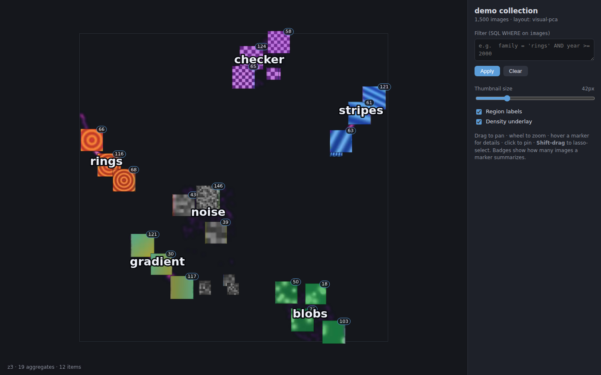

See a million images at once.
Well — the ones that matter.
Image Atlas turns an image collection into a zoomable map. Similar images sit together, dense regions collapse into a single representative thumbnail with a count, and SQL filters carve the collection without ever rearranging it. Local-first, open source, one command to run.

Scales to 1M images
Quadtree aggregation means the viewer renders a few hundred thumbnails at most, no matter the collection size. Benchmarked at one million points; used in research at 400k.
One command
atlas run --images ./photos builds everything on
first use and opens the viewer. No notebooks, no cloud, no
configuration files.
SQL filtering
Any metadata column is filterable with a plain SQL WHERE clause. Points never move — filters only change what is visible, so your mental map survives.
Inspect anything
Hover for a large preview, click a stack to browse every image inside it, lasso a region and export it as CSV.
Hierarchical region labels
A density underlay plus high-level region names that break into finer sub-regions as you zoom — so you can read the map's themes, not just its dots.
Your layout, or ours
Bring 2D coordinates from CLIP + UMAP for a semantic map, or let the built-in visual layout get you started.
Local and private
Python + numpy + Pillow, a stdlib web server bound to localhost, and a no-build frontend. Your images never leave your machine.
Install & run
pip install git+https://github.com/evoluchico/image-atlas
atlas run --images /path/to/your/imagesFirst run builds the dataset (the only slow step — it decodes every image once); later runs open instantly. See the tutorial for metadata, embeddings and all options.
Why a map?
Folder grids and search boxes answer questions you already know how to ask. A stable spatial layout answers the other kind: it shows the shape of a collection — its clusters, gradients, outliers and duplicates — and it lets you build spatial memory, so "that corner with the protest photos" stays where you left it, whatever filters you apply. Image Atlas is a continuation of ideas from the Collection Space Navigator, re-engineered around tile aggregation so the experience survives a million images.